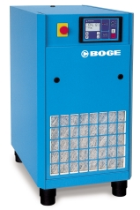

Статья. Шум при работе компрессоров и его снижение
Шум является одним из основных источников нарушения комфортного состояния персонала предприятия, находящегося непосредственно рядом с работающим компрессорным оборудованием. Поэтому часто учет шумовых характеристик необходим при разработке, выборе и установке компрессорных станций.
Каковы источники возникновения шума? Причиной появления шумов являются звуковые волны, возникающие при сжатии и расширении в воздухе и других средах. Например, скорость распространения звука в воздухе составляет примерно 330 м/с.
Основным параметром оценки шума является его частота. Она соответствует количеству колебаний звуковых волн в единицу времени, а в качестве единицы измерения частоты используется герц (Гц). 1 герц (Гц) равен 1 колебанию звуковой волны за 1 секунду.
Непосредственное измерение силы шума представляет собой достаточно сложную техническую задачу. Кроме того, дополнительной проблемой является существенное различие (в тысячи раз) в силе шума, например, при тихом разговоре и при взлете самолета. Поэтому, для широкого использования в технических расчетах ввели специальную логарифмическую величину - децибел (дБ), которая позволила представить наиболее используемые шумовые характеристики в сопоставимых и удобных для сравнения величинах. В таблице 1 приведены величины уровня шума, соответствующие различным источникам.
| Уровень шума, дБ | Описание |
| 160 | Самолет при взлете |
| 100 | Сирена |
| 90 (85-95) | Железная дорога, трамвай |
| 85 | Музыкальный центр |
| 80 | Игра на пианино |
| 75 | Пылесос |
| 68 | Стиральная машина |
| 53 (50-55) | Вытяжной вентилятор |
| 42 (40-43) | Холодильник |
| 20 | Шелест страниц |
Также существуют еще два важных параметра оценки шума: уровень мощности звука (шума) и уровень звукового давления.
1. Уровень мощности звука.
При работе компрессора часть подводимой энергии обязательно переходит в энергию звука. Так вот, мощность звука и есть энергия, передаваемая оборудованием в виде шума в единицу времени. Мощность звука (Lw) представляет собой отношение мощности звука вблизи источника (W, Вт) к базовому уровню, за который принята мощность звука Wo = Ю-12 Вт и определяется по следующей формуле:
Lw=10 1g(W/Wo), (дБ).
Например, если мощность звука W вблизи установки равна 1 Вт, соответствующий ей уровень мощности звука будет равен:
Lw= 10 lg (1/10-12) = 10 lg 1012= 120 дБ.
Уровень мощности звука не зависит от особенностей помещения, в котором установлен компрессор, а представляет собой постоянную величину, связанную с техническими параметрами оборудования. Поэтому, величины уровня мощности звука удобно использовать при сравнении акустических характеристик различных компрессоров.
2. Уровень звукового давления.
Давление звука - это ощущение звука на слух, т.к. наши уши воспринимают колебания давления, как звук. Уровень давления звука (LP) также выражается в дБ, а его расчет можно произвести по формуле: LP = 20 lg (p/ po), (дБ), где
р - давление звука вблизи источника, Па;
ро = 2 х 10-5 Па - базовая величина звукового давления (порог слышимости).
Уровень давления звука является переменной величиной и зависит от большого числа различных внешних факторов, а также от условий измерения. В первую очередь, на величину звукового давления влияет расстояние до оборудования и наличие отражающих поверхнос¬тей. Кроме того, большое значение имеет и место расположения шумомера, с помощью которого производятся измерения. Например, в открытом пространстве уровень звукового давления снижается примерно на 6 дБ при каждом удвоении расстояния от источника шума. В помещении же аналогичное снижение давления звука составляет уже 3-4 дБ. Допустимые уровни звукового давления для помещений различного назначения определены санитарными нормами.
В технической документации шумовые характеристики оборудования, в соответствии со стандартом CAGI PNEUROP, должны представлены в виде уровня звукового давления в дБ (А), измеренного на расстоянии 1 м от источника (компрессора). Говоря о компрессорах BOGE Kompressoren, можно отметить следующее: среди винтовых компрессоров наименьший уровень звукового давления на расстоянии 1 м имеют компактные компрессоры серии C - 59 дБ (А) и CL - 59 дБ (А), а наибольший -промышленные компрессо¬ры серии S – 68-86 дБ (А). Среди поршневых компрессоров наименьшие показатели у компрессоров серии SRDL - 66 дБ (А), а наивысшие у компрессоров серии RH - 85дБ(A).
Как уже говорилось, мощность звука уменьшается по мере удаления от источника шума. Это уменьшение можно рассчитать по формуле, связывающей уровень мощности и уровень звукового давления. При заданном уровне мощности звука (Lw), уровень звукового давления (LP) на расстоянии г от источника звука определяется по формуле:
LP = Lw - lg r - 11, (дБ).
Например, если мощность звука установки составляет 73 дБ и необходимо определить уровень звукового давления на расстоянии 10м, то он составит:
LP = Lw - lg r - 11 = 73 - lg 10 - 11 = 61 дБ.
Еще один важный вопрос касается оценки шума при установке в одном помещении нескольких компрессорных установок. В этом случае суммарный шум от нескольких источников не будет соответствовать сумме шумов от каждого источника, а определится в соответствии с тремя основными правилами:
1. Если показатели уровня шума у двух установок одинаковы, то их суммарный уровень шума превысит уровень шума каждой установки на 3 дБ.
2. Если показатели уровня шума у двух установок отличаются более чем на 10 дБ, то их суммарный уровень шума будет соответствовать значению большего уровня шума.
3. Если показатели уровня шума у двух установок отличаются менее чем на 10 дБ - порядок расчета таков:
- вычисляется разность уровней шума установок;
- при помощи таблицы 2 определяется специальная величина, которая затем добавляется к значению большего уровня шума.
Разница уровней шума, дБ |
1 |
2 |
3 |
4 |
5 |
6 |
7 |
8 |
9 |
10 |
Добавляемая величина, дБ |
2,6 |
2,1 |
1,8 |
1,5 |
1,2 |
1,0 |
0,8 |
0,6 |
0,5 |
0,4 |
Пример 1. В помещении установлены две винтовые компрессорные установки, уровень шума которых 66 дБ и 69 дБ, соответственно. Необходимо определить суммарный уровень шума.
В этом случае, разность уровней шума составит: 70 - 67 = 3 дБ, а общий шум от двух установок 69 + 1,8 = 70,8 дБ.
Если же установок более двух, порядок расчета не меняется, а установки рассматриваются парами, начиная с двух, имеющих наименьший уровень шума.
Пример 2. В помещении установлены три винтовые компрессорные установки уровень шума которых 68 дБ, 70 дБ и 74 дБ, соответственно. Необходимо определить суммарный уровень шума.
В этом случае порядок расчета такой:
- для первых двух установок разность уровней шума составит 70 - 68 = 2 дБ, а суммарный шум 70 + 2,1 =72,1 дБ;
- для трех установок разность уровней шума составит 74 - 72,1 = 1,9 дБ, а суммарный шум 74 + 2,1 = 76,1 дБ.

Таким образом, общий уровень шума трех компрессорных установок равен 76,1 дБ.
Мероприятия по снижению шума при работе компрессоров можно разделить на два вида:
- мероприятия, относящиеся к снижению шума самого компрессора, как в части установки шумопоглощающих покрытий, так и конструктивного совершенствования механизмов, повышения общего КПД;
- мероприятия, относящиеся к снижению шума в зависимости от способа установки компрессора.
Снижение уровня шума компрессорной установки достигается, как правило, использованием специального шумоизолирующего материала. У винтовых компрессоров BOGE Kompresoren серий С/S им обклеены внутренние панели корпуса, а со стороны забора воздуха установлена усиленная звукоизоляция. Поршневые компрессоры также выпускаются в шумозащитном исполнении.
Гашение вибраций и шумов, генерируемых механизмами, в винтовых компрессорах BOGE дополнительно происходит благодаря бесклапанной схеме циркуляции масла, отсутствию обратных и запорных клапанов в масляном контуре.
В качестве дополнительной меры на выходе сжатого воздуха компрессора может устанавливаться глушитель.
В ряде случаев для снижения шума от компрессоров предприятия устанавливают вокруг компрессорной группы шумозащитные панели. Такая установка обязательно должна сопровождаться параллельным решением вопроса об обеспечении компрессорной группы приточным воздухом и отвода тепла.
При решении вопроса о снижении шума в зависимости от способа установки компрессора существуют три основных способа установки:
- в центре помещения;
- у стены;
- в углу, между двух стен.
Минимальный уровень шума будет при установке в центре помещения (одна отражающая поверхность - пол); более шумной будет установка у стены (две отражающие поверхности - стена и пол); и самым шумным будет третий вариант в углу (три отражающие поверхности - пол и две стены). Если принять уровень шума компрессора, измеренный в свободном пространстве, за некий номинал, то при установке первым способом он увеличится на 3 дБ, вторым способом на 6 дБ, третьим способом на 9 дБ. Именно по этой причине рекомендуется избегать установки оборудования рядом со стенами.
Таким образом, решения для снижения уровня шума есть, а комплекс мер, позволяющий сделать это, достаточно широк. И в зависимости от типа используемого оборудования, условий его размещения и эксплуатации, а также особенностей производства всегда можно устранить, или минимизировать вредное воздействие шумовых факторов и создать комфортные рабочие условия для персонала.
Для направления заявок на поставку и сервисное обслуживание компрессоров и оборудования, а также любых вопросов и получения необходимых консультаций, обращайтесь по адресу:
Офисы Компании:
в г.Москва тел./факс: +7 (495) 66-29-529;
в г. Екатеринбург тел./факс: +7 (343) 38-529-49;
в г.Краснодар тел./факс: +7 (861) 255-08-48, 251-87-43;
техническая поддержка по тел.: +7 (918) 628-28-29
e-mail: energotechnica@mail.ru
Офисы дилеров:
тел. в г.Белгород:
+7(4722)37-48-96 , тел. в г.Екатеринбург:
+7 (343) 361-30-33 ,
тел. в г. Нижний Новгород:
+7 (831) 218-02-89, тел. в г. Новокузнецк:
+7 (3843) 76-75-16, +7 (38475) 4-11-01 ,
тел. в г. Омск:
+7 (3812) 66-66-14, тел. в г. Казань:
+7 (843) 526-67-67, тел. в г. Ярославль:
+7 (4852) 94-29-59
Главная | Карта сайта | Контакты |
Copyright © 2004 - 2016 Компания ЭнергоТехника (промышленные винтовые и поршневые компрессоры). Все права защищены..